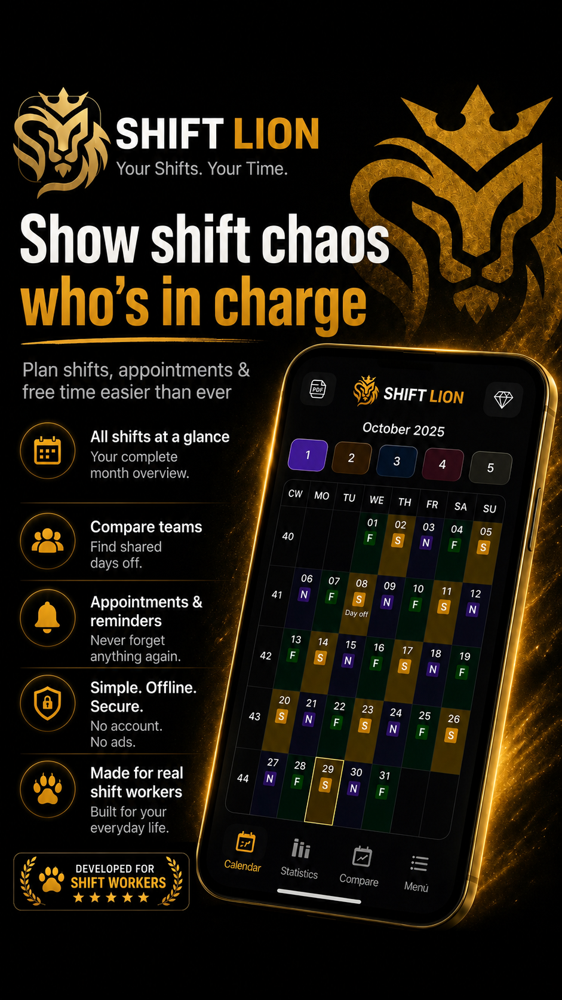

Shift planning built around your life
Plan early, late and night shifts, keep track of days off and discover when your schedules overlap.
Download Shift Lion for AndroidYour personal shift calendar
Shift Lion is designed for individual shift workers. Create your own rotation, add vacation and appointments, and see your work pattern at a glance.
Everything you need for rotating schedules
Custom shifts
Create early, late, night and custom shifts with individual times and colors.
Compare schedules
Compare multiple shift groups and find shared days off.
Monthly insights
Review working time and shift distribution.
Pay estimates
Get an orientation for wages and allowances.
Calendar export
Use your schedule with other calendar apps.
Offline use
Plan locally without a mandatory account.
Made for real shift work
For healthcare, manufacturing, logistics, public safety and other rotating operations.

Frequently asked questions
Can I create my own rotation?
Yes. Define custom shifts and repeating patterns.
Can I compare schedules?
Yes. Multiple shift groups can be compared.
Does it work offline?
Yes. Core planning works locally.
Take control of your shift schedule.
See shifts, days off and shared time in one place.
Download Shift Lion